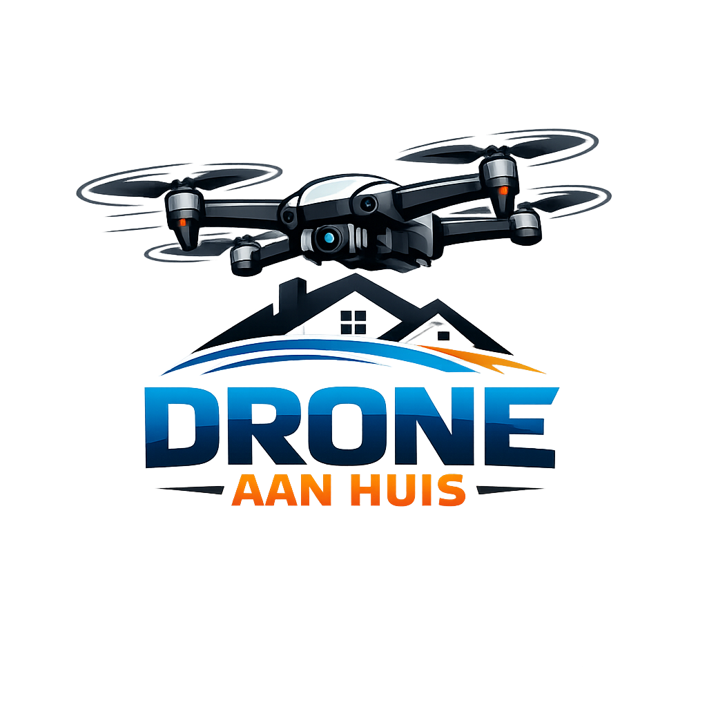
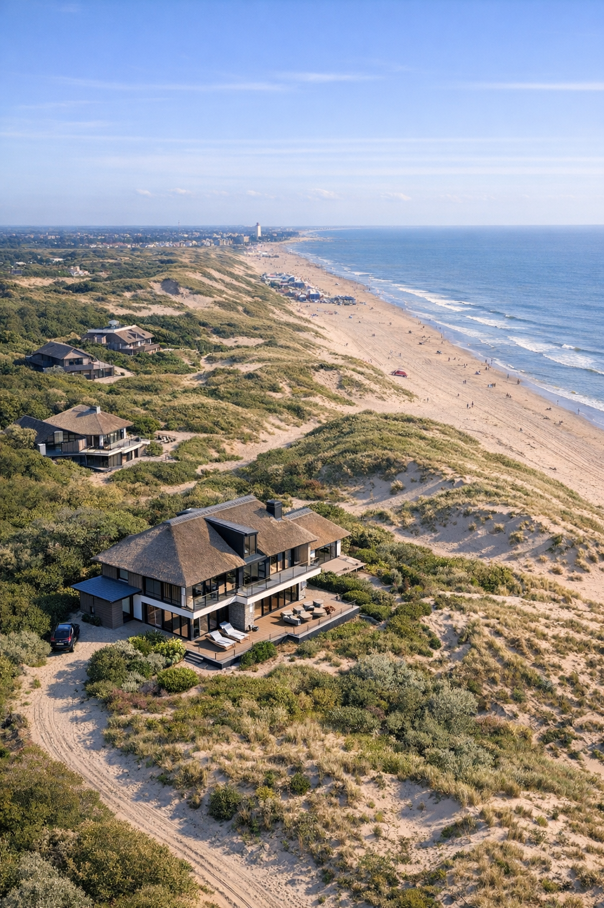
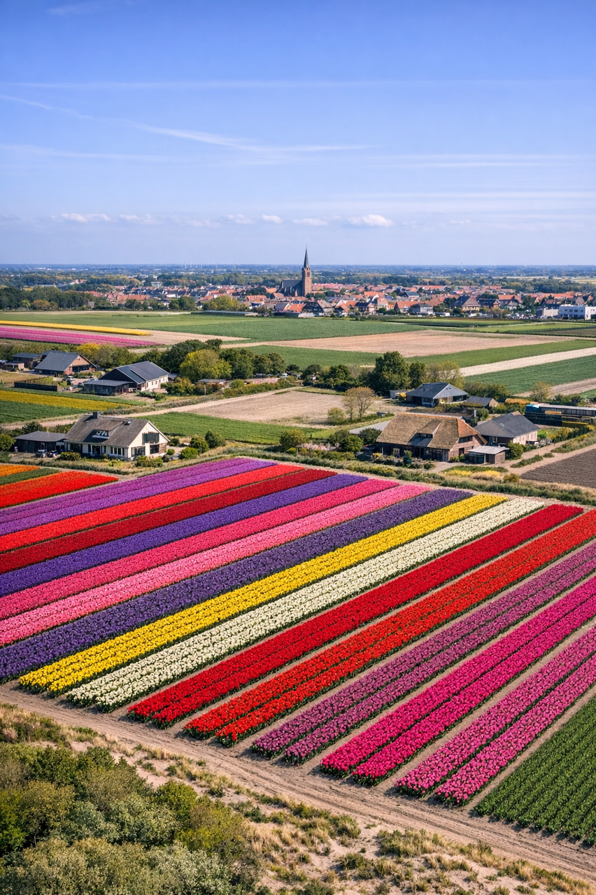
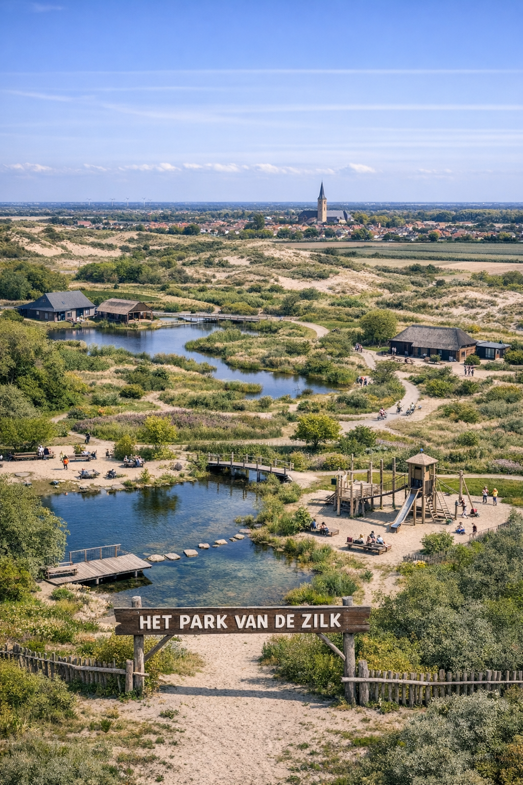

Een greep uit ons werk in de regio. Klik op een foto voor details.

Noordwijk
maart 2025

Noordwijkerhout
april 2025

De Zilk
februari 2025
Vervang de voorbeeldfoto's
Plaats je eigen afbeeldingen (jpg/png) in dezelfde map en pas de bestandsnamen in de src aan.